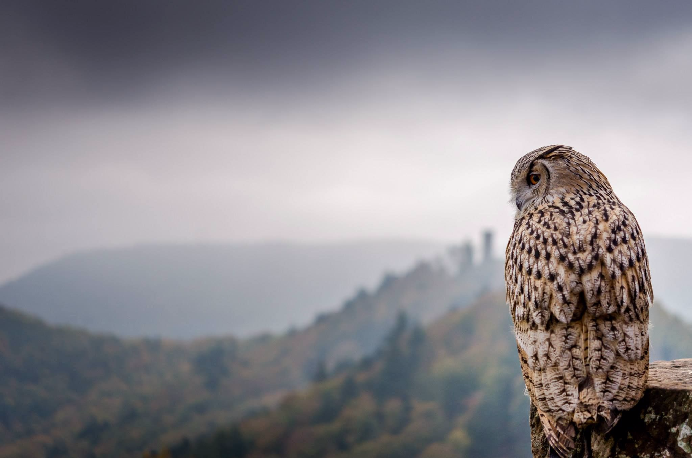

This was taken in a zoo (Not good enough or wealthy enough to do those types of expeditions).
I was fortunate enough to capture this lynx in a very cold and wintery day. I can almost fool the viewer to think that I caught this one in the wild (I wish).

Owl on a castle!
This is an actual wild capture! (So lucky).
This is one of my all time favorites. During a hike on one of Germany's castles, I spotted this owl sitting on one of the castle's walls. I quickly snapped this pick which happened to have a very cool background of one of the castle's towers.
A young lion.
No, I was not in a safari. This was taken in a zoo.
This lion was quietly enjoying a nice nap when a baby started crying near his cage. Awoken by the sudden annoying noise, the lion looked in the baby's direction, thinking "Lady, please quiet the little kid up!". I don't blame you lion, I don't blame you.
It was an awesome opportunity to take his picture though :)
"Take a picture, it will last longer!"
During one of my zoo expeditions, I stared at this bearded dragon for over a half hour. This thing did not move at all and just stared back at me. I was fascinated by it's scale and pretty colors and often use this picture as a reference when I draw dragons.